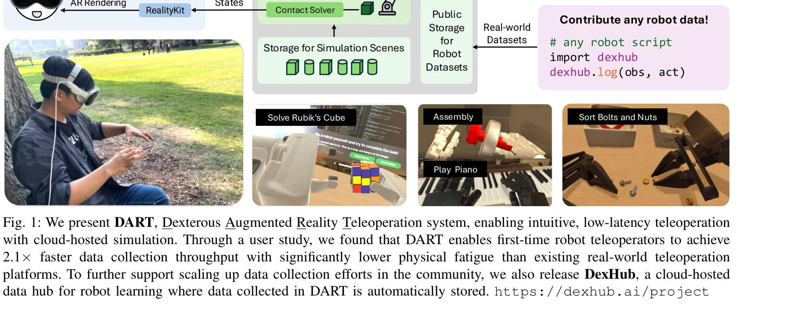
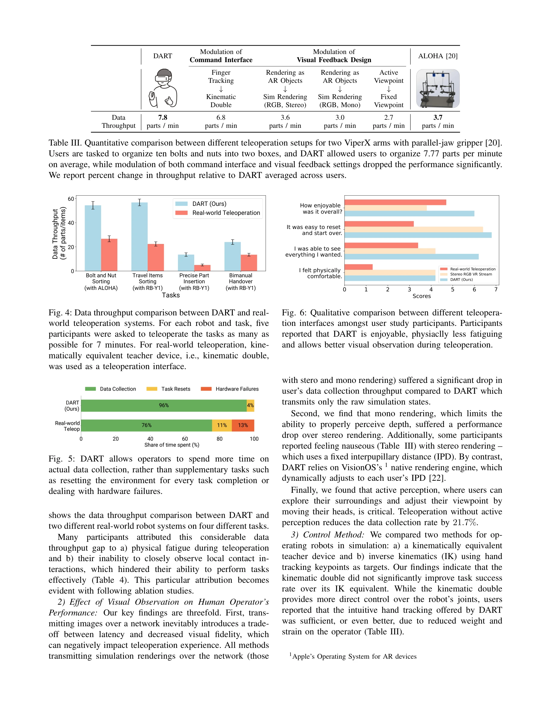

저자: Younghyo Park, Jagdeep Singh Bhatia, Lars Ankile, Pulkit Agrawal | 날짜: 2024-11-04 | URL: https://arxiv.org/abs/2411.02214

Fig. 1: We present DART, Dexterous Augmented Reality Teleoperation system, enabling intuitive, low-latency teleoperation
DART는 클라우드 기반 시뮬레이션과 AR을 활용한 군중기반 로봇 데이터 수집 플랫폼이며, DexHub는 수집된 데이터를 저장하는 공개 클라우드 데이터베이스이다.

Fig. 4: Data throughput comparison between DART and real-
Fig. 1: We present DART, Dexterous Augmented Reality Teleoperation system, enabling intuitive, low-latency teleoperation
총평: 본 논문은 AR과 클라우드 시뮬레이션을 창의적으로 결합하여 로봇 데이터 수집의 실질적 문제(지연, 피로, 확장성)를 해결하는 DART 플랫폼을 제시하며, DexHub를 통해 커뮤니티 규모의 데이터 생태계 구축을 시도한 점에서 높은 기여도를 가진다.